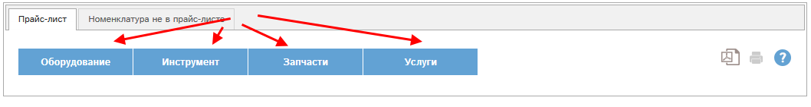
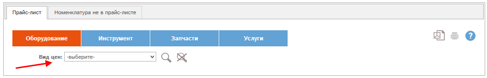

При наличии у Вас специальных прав Вам доступен прайс-лист поставщика.
Из прайс-листа поставщика невозможно создание коммерческого предложения.
Этот прайс-лист служит для:
- добавления позиций в прас-листы
- управления базовыми ценами и коэффициентами, используемыми при формировании всех остальных прайс-листов.
Для начала работы Вам необходимо выбрать раздел прайс-листа:

Рис. Прайс-лист. Начало работы.
Выберем раздел "Оборудование":

Рис. Прайс-лист. Выбран раздел.
В блоке "Вид цен" необходимо выбрать вид цен "от поставщика":

Рис. Прайс-лист. Выбран вид цен.
Доступны две формы прайс-листа поставщика, в зависимости от выбранного поставщика. Форма прайс-листа показывает способ ценообразования при выставлении КП на оборудование данного поставщика. Мы рассмотрим обе формы.
Далее необходимо выбрать данные в следующих полях:
1. Производитель.
2. Категория.
3. При необходимости - Оборудование.
Эти поля можно выбирать в любой последовательности.
Выберем производителя Intermac - стекло, затем категорию - Горизонтальные ОЦ.
После выбора нажмем кнопку  .
.
Откроется прайс-лист оборудования категории Горизонтальные ОЦ. Для просмотра опций отдельного оборудования выберите это оборудование в фильтре "Оборудование" и нажмите .
.

Рис. Прайс-лист поставщика.
В прайс-листе показаны данные, вносимые в карту оборудования (и опции). (1-11).
Ряд полей доступен для редактирования. Ряд полей является автоматически вычисляемым и для редактирования недоступен. При наведении мыши на такое поле всплывает формула, по которой рассчитано это поле.
Доступно быстрое редактирование прайс-листа. Для этого отредактируйте требуемые поля у требуемого оборудования (или опций). При этом измененные позиции автоматически отметятся галочками в предпоследнем столбце (1):
Рис. Быстрое редактирование прайс-листа.
Для сохранения изменений нажмите кнопку (2). Прайс-лист будет сохранен.
С помощью кнопки  у конкретной позиции можно просмотреть или
отредактировать карту данной позиции.
у конкретной позиции можно просмотреть или
отредактировать карту данной позиции.
С помощью кнопки  можно удалить позицию.
можно удалить позицию.
Если кнопка серого цвета -  ,
то удалить данную позицию невозможно. Это может быть по нескольким
причинам:
,
то удалить данную позицию невозможно. Это может быть по нескольким
причинам:
- У Вас нет прав на удаление позиции прайс-листа;
- По данной позиции в программе есть какие-либо утвержденные КП.
Кнопки и  позволяют получить текущий прайс-лист в формате pdf, либо его версию для печати.
позволяют получить текущий прайс-лист в формате pdf, либо его версию для печати.
Другая форма прайс-листа построена по сходному принципу и выглядит следующим образом: